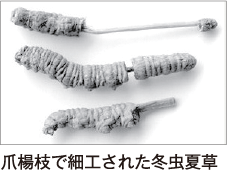

国内で養蚕した冬虫夏草のみを使用し、
製造も国内で行っていますのでご安心ください。
実際、素材や品質が不明な“偽物”の多くは海外から輸入されるものです。右の写真のように細工したり、貴金属をまぶして目方をごまかしたりする事例も。商品を選ぶ際は、産地や特有成分「コルジセピン」の含有量を確認してください。
- 
古来より漢方にも使われ、重宝している冬虫夏草。近年ではその有用性から乱獲が進み、価格も高騰。“金よりも高価な菌”として、コウモリガの冬虫夏草では、１gあたり4,000～5,000円で流通しているとか。
※100gあたり。日本食品分析センター調べ

冬虫夏草は、毎日の健康を脅かす悩みに役立つとして、岡山大学を始めさまざまな機関で研究が進められる話題の健康成分。その有用性の高さから、業界でも注目を集めています。
当社の冬虫夏草を詳しく知りたい方は、下の動画をご覧ください。
放映番組の短縮版になりますが、当社のこだわりや研究成果などをご紹介しています。
テレビ東京系列 テレビせとうち（岡山・香川地区限定）2017年3月18日放送
医療経済ドキュメンタリー番組
『日本産冬虫夏草を世界に〜あるアパレル企業の統合医療への貢献〜』
アパレルメーカーとして2018年に70周年を迎えます。繊維素材の研究開発の中で出会った独自の養蚕技術を応用し、冬虫夏草の量産に成功しました。ファッションだけにとどまらず、快適で活力に満ちた健やかな人生をご提案し続けています。
〒700-8562 岡山市北区昭和町 3-12

朝起きて一番に6粒飲んでいます。安心感が出て今日も元気で過ごせると自分に言い聞かせています。先行きに不安の影がありましたが、薄くなってきたようです。
継続期間10ヵ月（67歳・女性）
※ご愛飲者様の感想であり、個人差があります。心に影が差していると指摘されて将来が不安でしたが、1日4〜5粒で心のモヤが晴れつつあります。妻も1日1粒で調子が出ない時は、4〜5粒にするとテキメンに良いです。
継続期間9ヵ月（43歳・男性）
※ご愛飲者様の感想であり、個人差があります。座り仕事で夕方になると元気が持たず滅入っていましたが、1日4粒飲んでからは身も心も軽い感じ！一日中快適に作業がはかどります。
継続期間6ヵ月（50歳・女性）
※ご愛飲者様の感想であり、個人差があります。その日の体調により1日3～6粒飲んでいますが、調子がいまひとつの時は9粒飲んで寝ると翌朝にはすっきり元気になります。健康数値も安定してきてうれしいです。
継続期間 1年1ヵ月（62歳・女性）
※ご愛飲者様の感想であり、個人差があります。人が集まる場所等に行けなくなり、10年間大変な思いをしていました。最初は1日5粒飲んでいましたが、最近では毎日3粒にして健康が維持できています。
継続期間 1年（63歳・男性）
※ご愛飲者様の感想であり、個人差があります。最初は1日6粒ずつ飲んでいましたが、現在は毎日3粒で続けています。今ではセミがジージー鳴いている感じが気にならなくなり、快適に過ごしています。
継続期間7ヵ月（70歳・男性）
※ご愛飲者様の感想であり、個人差があります。※ご愛飲者様の感想であり、個人差があります。年齢や継続期間は取材時点。
プライバシー保護のため、お名前は省略させていただきました。
本商品は、医療関係の施設を中心に、日々の健康習慣の補助食品としてお取り扱いいただいています。また一般のお客様向けにも、通販限定ではありますが、販売を行っています。
実際、素材や品質が不明な“偽物”の多くは海外から輸入されるものです。右の写真のように細工したり、貴金属をまぶして目方をごまかしたりする事例も。商品を選ぶ際は、産地や特有成分「コルジセピン」の含有量を確認してください。
当社の「冬虫夏草」は健康食品ですので、体調に合わせて多めに飲まれても問題はありません。まとめて飲むことで実感されている方もいらっしゃいますが、個人差もありますのでご期待に添えない場合もございます。
当商品は、医療関係の施設での取り扱いが中心ですので、ドラッグストアなどでの店頭販売は一切行っておりません。そのため、一般のお客様でも気軽にお買い求めいただけるように、現在は通販限定で販売をしています。